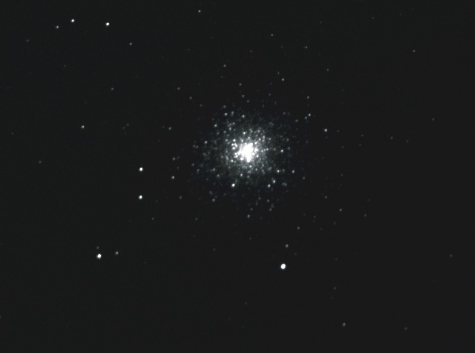
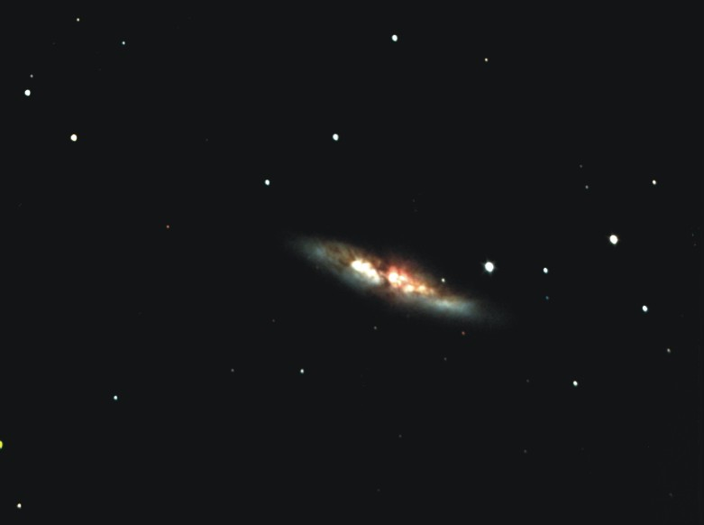
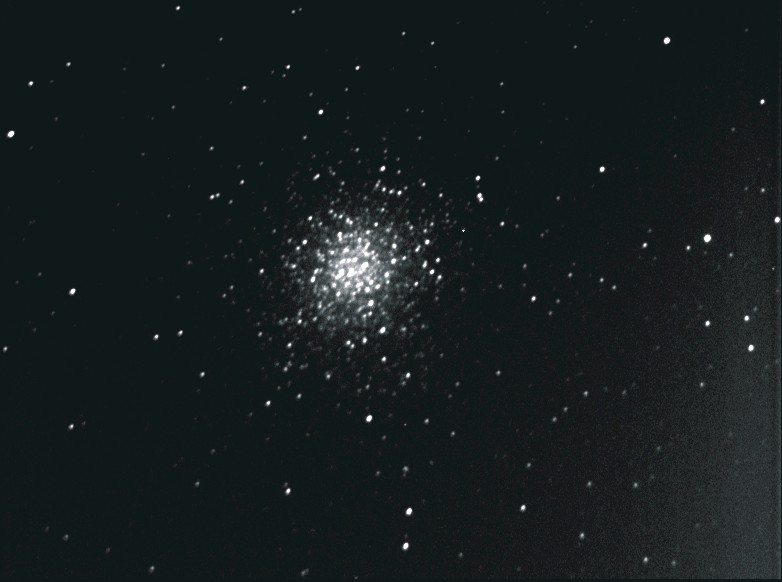

www.Astronovel.github.io
|
|
|
|
www.Astronovel.github.io |
|
|
|
|||||||||||||||||||
|
|
- - - - - - - - - - - - - - - - - - - - - - - Telescopio Bresser AR 102/1000 f/10 M57 5-10-2020 Bresser +60seg
M92 5-10-2020 Bresser +90seg
M31 5-10-2020 Bresser +250seg
M81 5-10-2020 Bresser +90seg
M40 5-10-2020 Bresser +15seg
- - - - - - - - - - - - - - - - - - - - - - - - - - - - - - - - - - - - - - - - - - - - - - - - - - - - - - - - - - - - - - - - - - - - - - -
M 31 20-08-2009 1h30´ UTC ATIK 16IC + Telescopio = 70 mm F5 Exposición = 630" ----------------------------------------------------------------------------------------------------------------------------------------------------------------------------------------------------- LNB 249
IC 1318
NGC 6888
ALBIREO RGB
ALBIREO B/N LNB 249
IC 1795 IC 5146
M 81
M 2 (17-07-2009)  M 9 (17-07-2009)
M 19 (17-07-2009)
M 62 (17-07-2009)
M 102 (17-07-2009)
NGC 6369 (17-07-2009)
Cabeza de caballo
(12-02-2009 18h51' UTC , 250/1200, expo: 1200" )
NGC 2264 Nebulosa del cono (13-02-2009 21h45' UTC , 250/1200, expo: 1050" )
NGC 2261
(13-02-2009 22h37' UTC , 250/1200, expo: 340" )
M 65 (16-02-2009 00h00' UTC , 250/1200, expo: 330" )
M 66
(16-02-2009 00h50' UTC , 250/1200, expo: 330" )
NGC 3628 (17-02-2009 21h40' UTC , 250/1200, expo: 680" )
M 1
(17-02-2009 18h30' UTC , 250/1200, expo: 400" )
M 42 (15-02-2009 20h17' UTC , 250/1200, expo: 360" )
M 97 (24-02--2009)
M 82 (24-02--2009) 
C/2007 N3 (LULIN) (24-02--2009)
M98 (16-5-2009)
Pluton (16-05-2009 0h32' UTC, expo: 40" )
M101 (27-05-2009 0h26' UTC , 70/350, expo: 430" )
M14 
M29
M39
Steph 1
|
||||||||||||||||||
|
Los datos expuestos en esta pagina son propios. |
|||||||||||||||||||